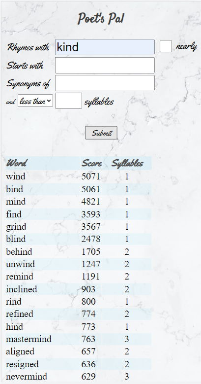
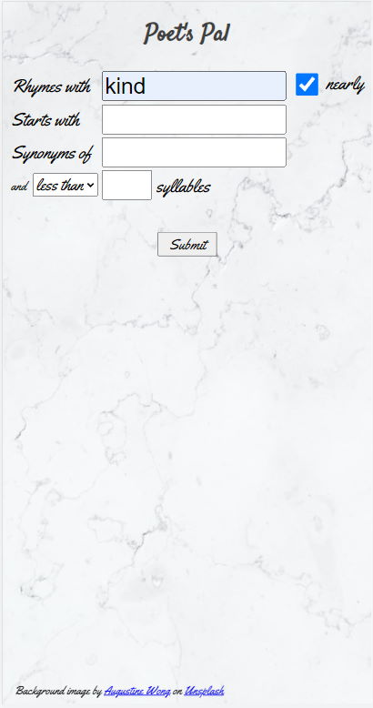
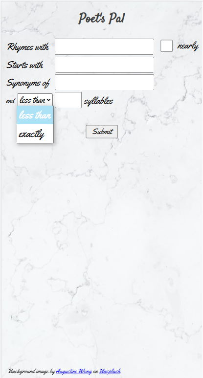

Eugene C. Olsen, Section 7, Fall 2021
The purpose of the Poet's Pal is to provide a simple one-stop tool for those who desire quick access to literary devices including rhyme, near-rhyme, alliteration, synonyms, and combinations thereof.
The Poet's Pal app is easy to use yet powerful. The app is more than a rhyming dictionary and thesaurus, though it is these things. The app enables the wordsmith to create targeted search combinations such as "find me a word or words that rhyme with 'kind', begin with the letter 'f', mean 'discover', and have exactly 1 syllable."
The audience for the app would include wordsmiths, such as poets and songwriters, who want quick access to the literary devices mentioned above.
The primary data source for the app is the Datamuse API, a word-finding query engine for developers.
Since the Datamuse API can return results that are not safe for work, church, or BYU, a secondary data source is a local JSON file that includes such words, obfuscated by Base64 encoding, to filter these words out of the results.
Finally, the Google fonts "Satisfy" and "Yellowtail" are used in the styling and a marbled background image from Unsplash.com by Augustine Wong give a look to the app that is easy on the eyes.
Below are screen shots of a working model of the app that show its appearance, components, and styling, including colors and typography.
|
This is the basic layout of the app with results.
"Rhymes with" is self-evident. The user can enter a word and retrieve a list of words that rhyme with the word entered. Check the "nearly" checkbox to include near rhymes, as shown below. Enter one or more letters in the "Starts with" field to find words that alliterate. "Synonymns of" retrieves words that are synonyms of the word entered in the field. Finally, the results list can be filtered by number of syllables, either exactly or less than, as shown below. The Score column in the results indicates how well the word rhymes or how closely it alliterates or in the case of the synonym, how closely the meanings match. |
 |
| Checking the 'nearly' checkbox directs the app to find words that nearly rhyme with the word entered to its left. |  |
| The last field is a filter that limits the results to words with exactly the specified number of syllables or less than a certain number of syllables, as selected from the drop-down list. The default is "less than". |  |
The initial module list includes the usual suspects, plus a JSON file that includes words to be excluded from the results.
Additional JavaScript files may be added to house helper functions.